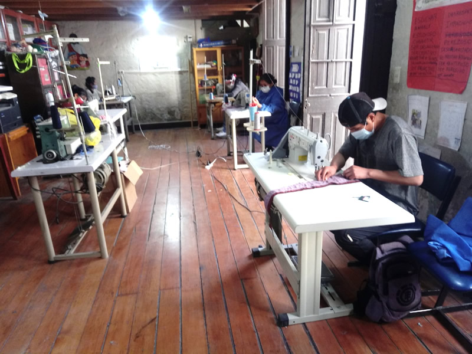

Conoce algunos emprendimientos y actividades productivas de Yura.

📍 Yura
Grupo dedicado a la confección de prendas como buzos, pantalones y casacas.
📍 Yura
Artesanos que realizan productos y estampados personalizados en prendas y accesorios.
📍 Yura
Pequeños negocios dedicados a la preparación y venta de comidas y productos tradicionales.
📍 Yura
Negocios locales dedicados a elaborar prendas de vestir y otros productos textiles.
📍 Yura
Servicio local dedicado a trabajos de cerrajería y duplicado de llaves.
Conoce y valora los productos y servicios de la comunidad.